lecture #11
Non-comparison sort for integer keys \(A[1..n]\subseteq\{1,\dots,k\}\).
COUNTING-SORT(A[1..n], k)
let B[1..n], C[1..k]
for i ← 1..k: C[i] ← 0
for j ← 1..n: C[A[j]] ← C[A[j]] + 1
for i ← 2..k: C[i] ← C[i] + C[i-1]
for j ← n..1:
B[C[A[j]]] ← A[j]
C[A[j]] ← C[A[j]] - 1
return B
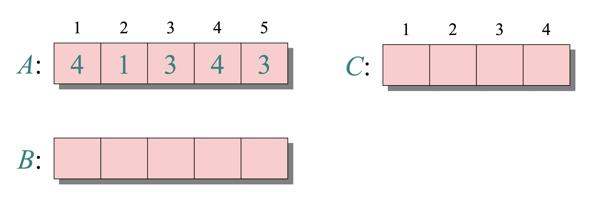
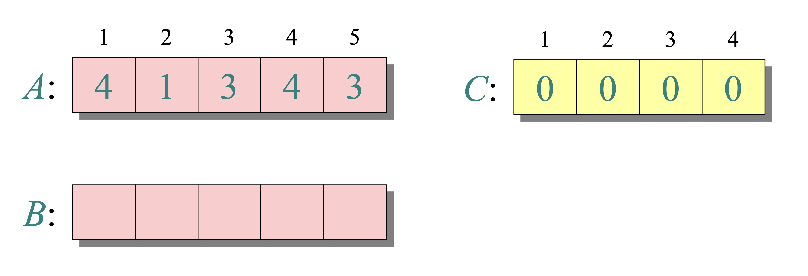
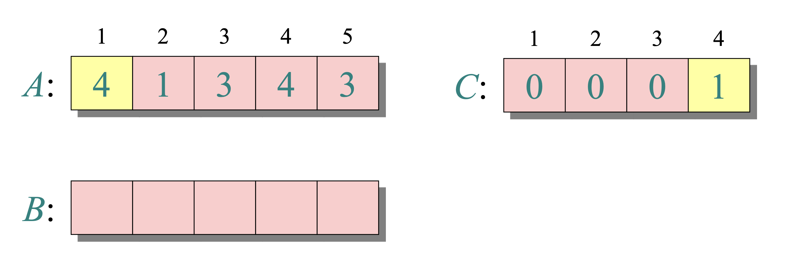
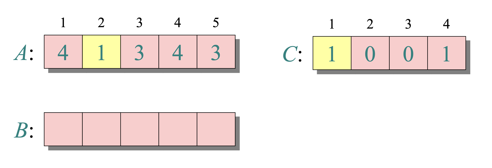
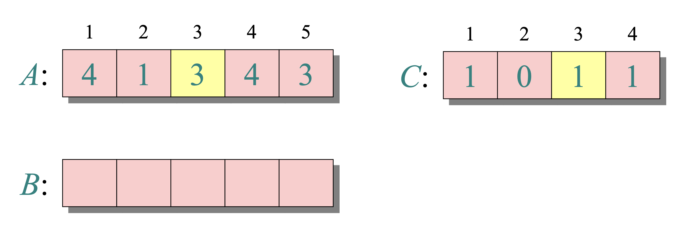
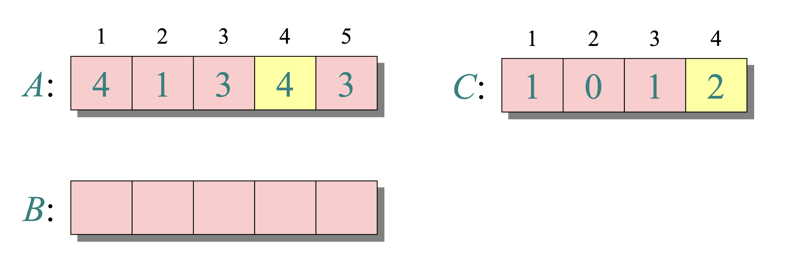
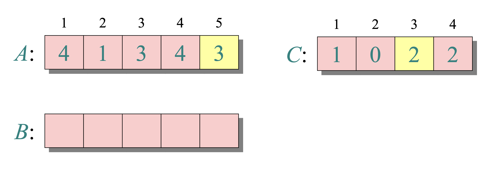
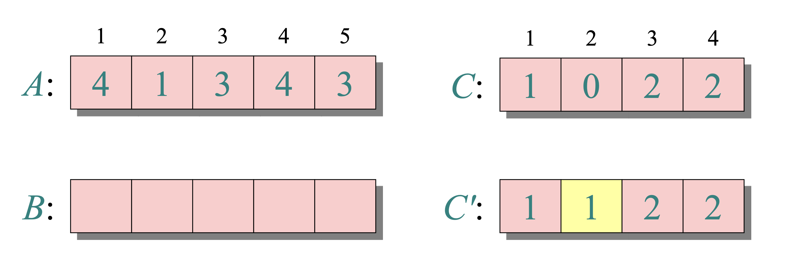
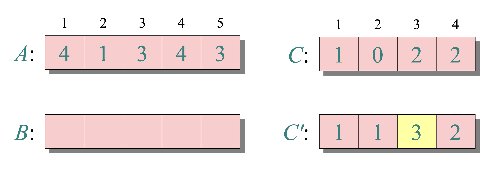
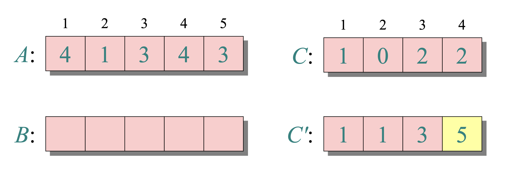
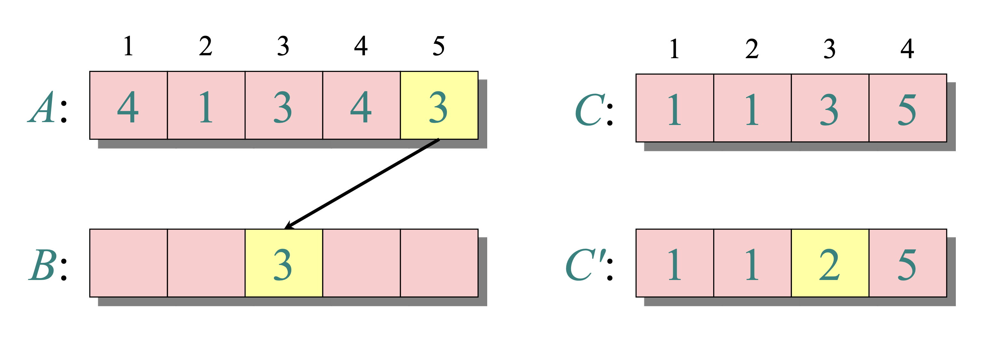
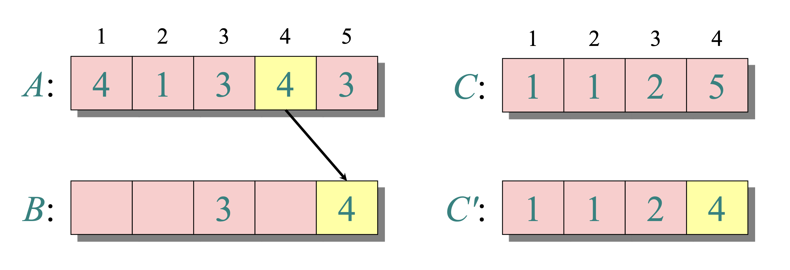
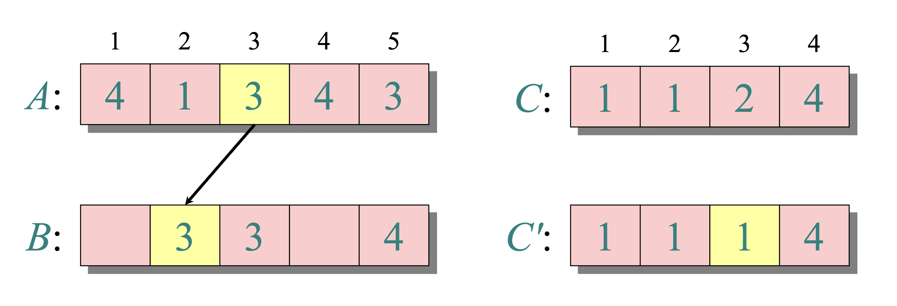
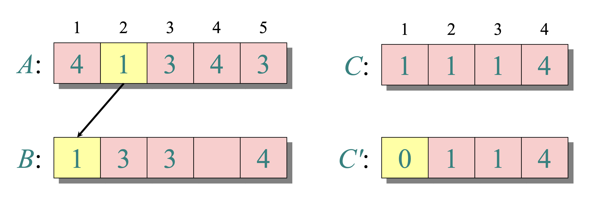
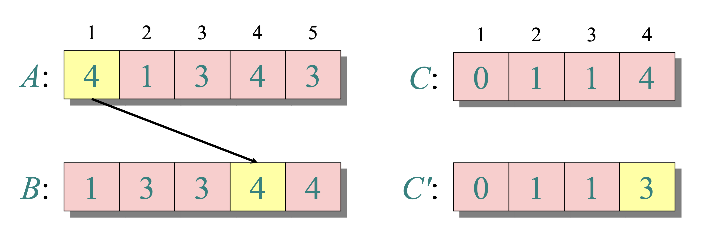
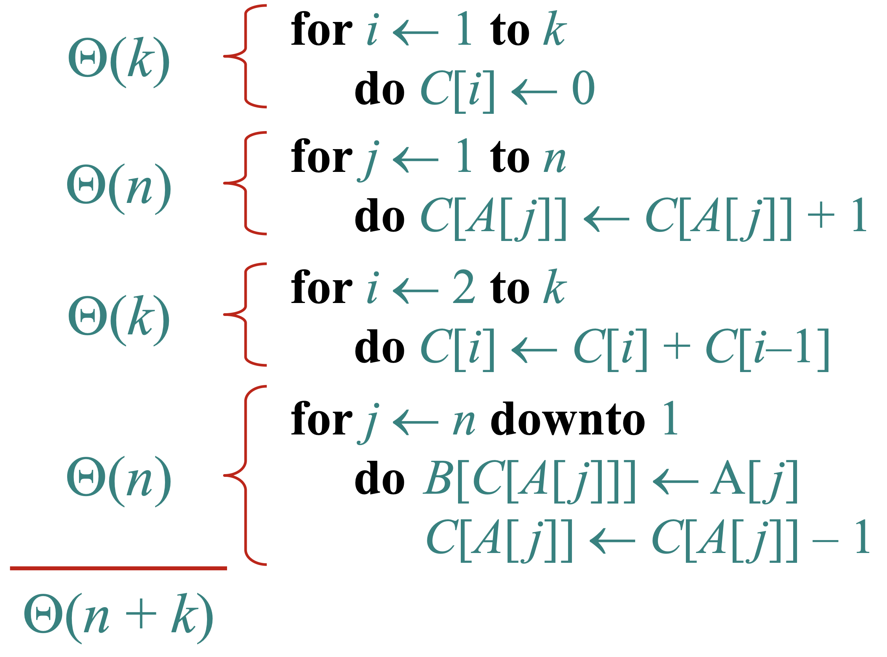
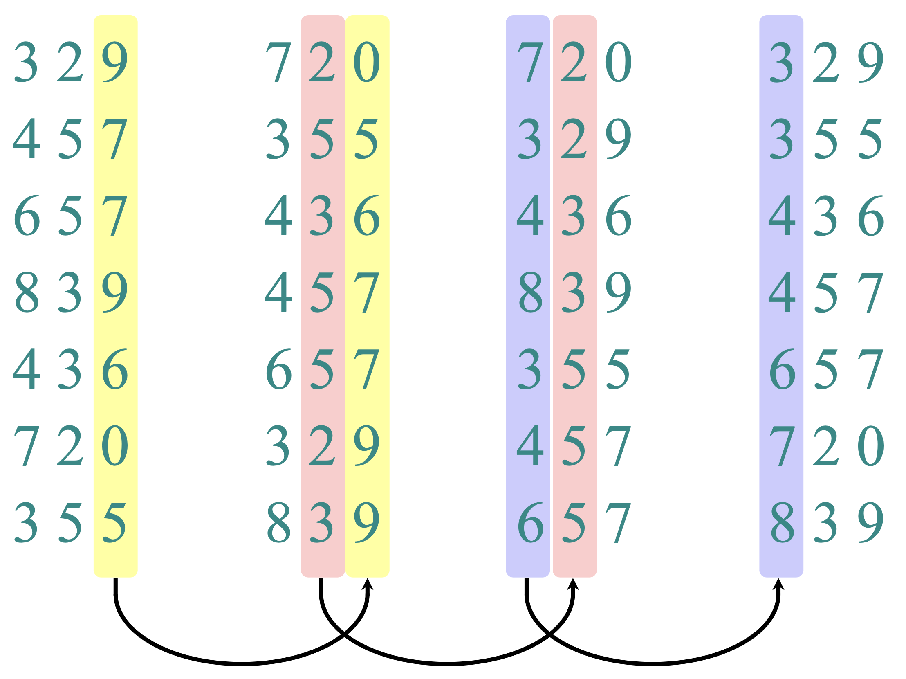
Stable sort by digit \(t=1,2,\dots,d\) yields global order.
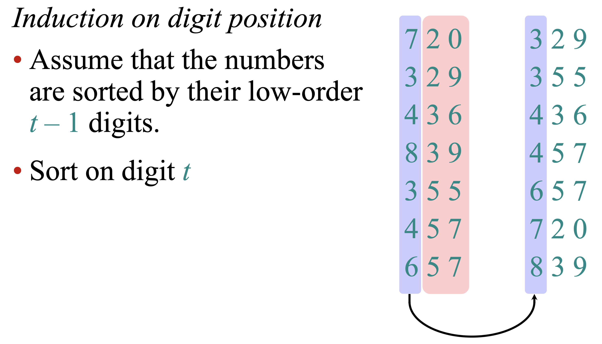
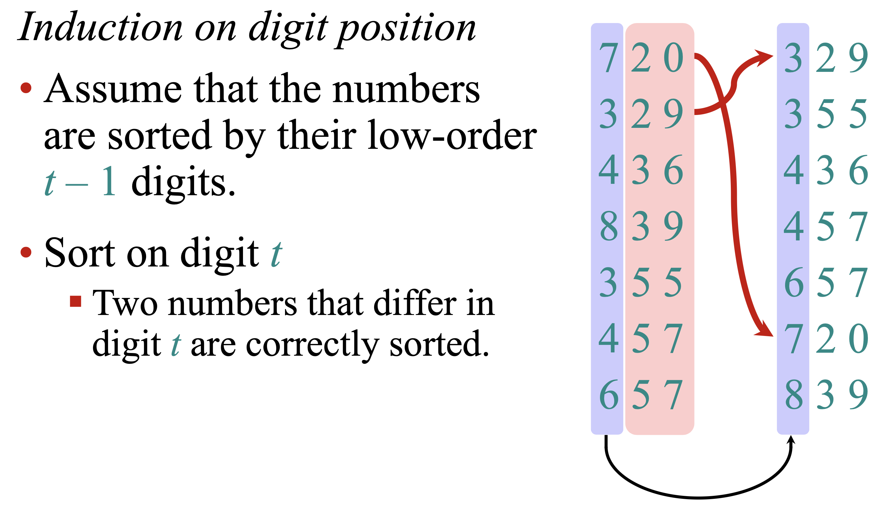
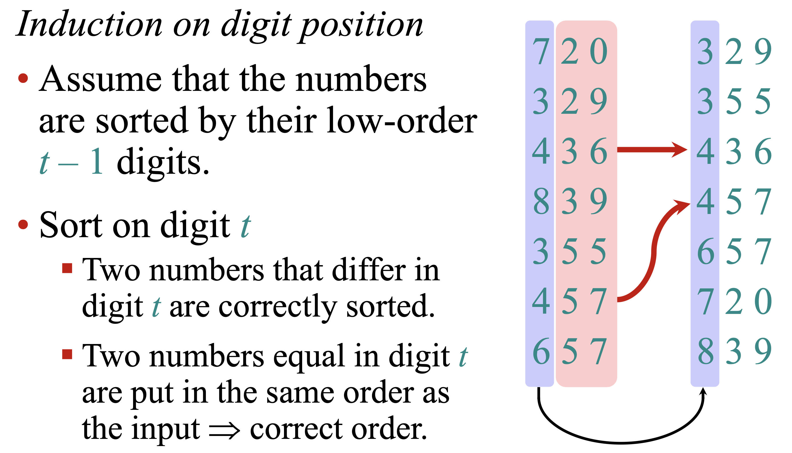
RADIX-SORT(A, d, k) # d digits, each in 0..k−1
for t ← 1..d:
A ← STABLE-COUNTING-SORT-BY-DIGIT(A, t, k)
return A
\(\Theta(d(n+k))\)
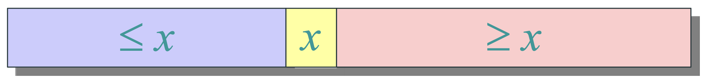
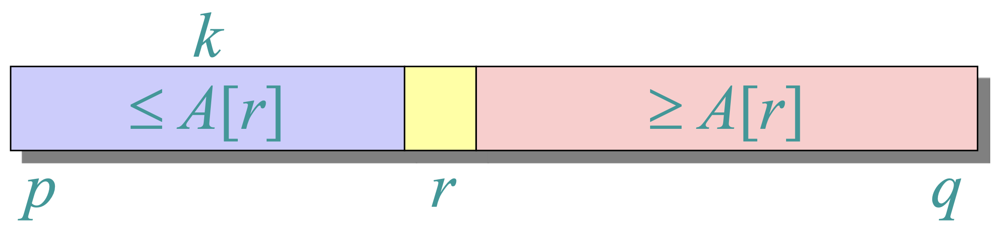
Partition step: elements on the left are \(\le x\), on the right are \(\ge x\).
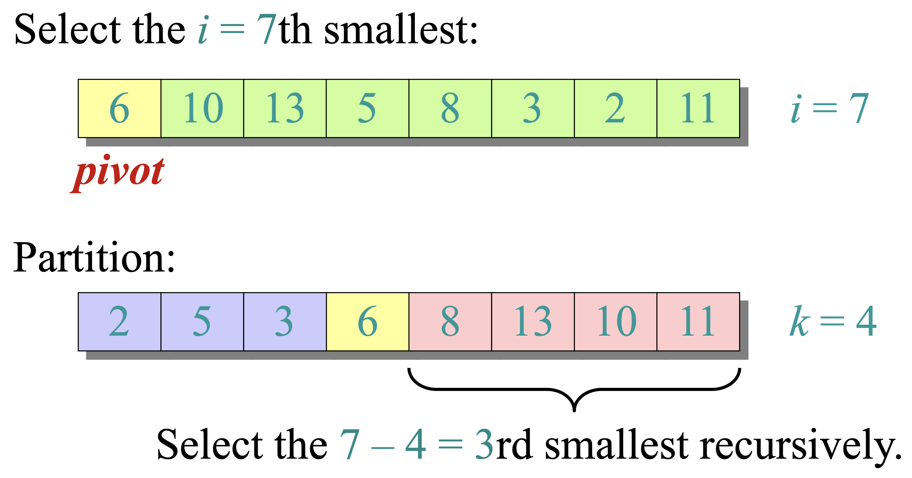
We recur only on one side after checking the pivot's rank.
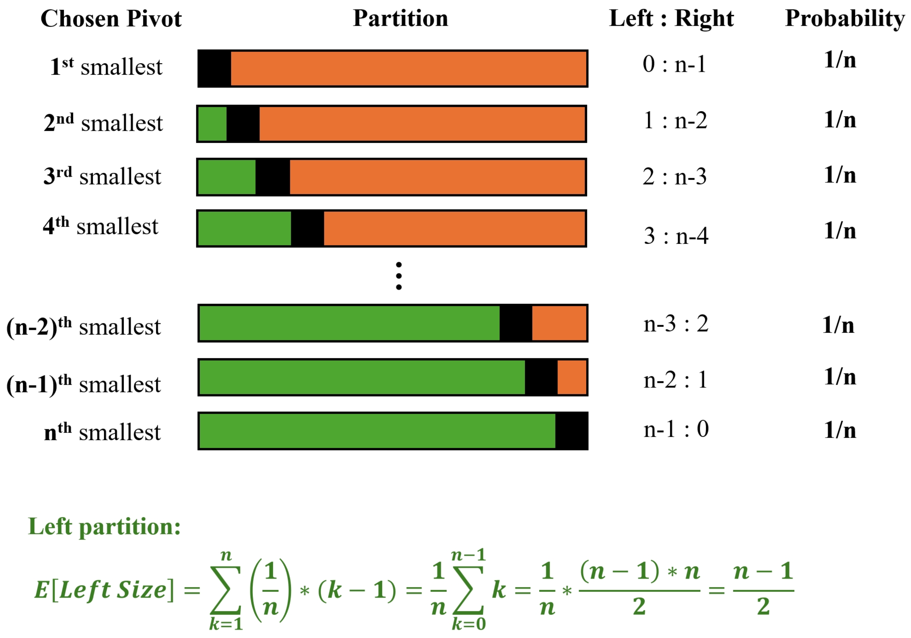
# returns the i-th smallest element in A[p..q]
RAND-SELECT(A, p, q, i)
if p = q:
return A[p]
r ← RAND-PARTITION(A, p, q)
k ← r - p + 1 # rank of A[r] within A[p..q]
if i = k:
return A[r]
elif i < k:
return RAND-SELECT(A, p, r-1, i)
else:
return RAND-SELECT(A, r+1, q, i - k)